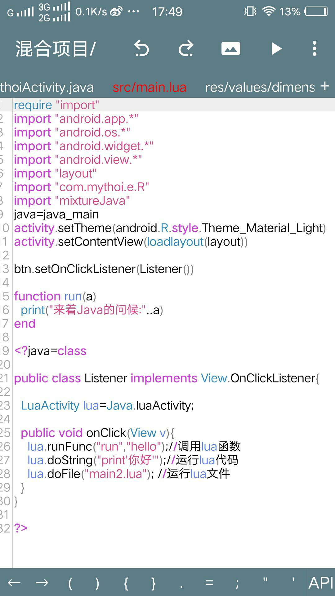
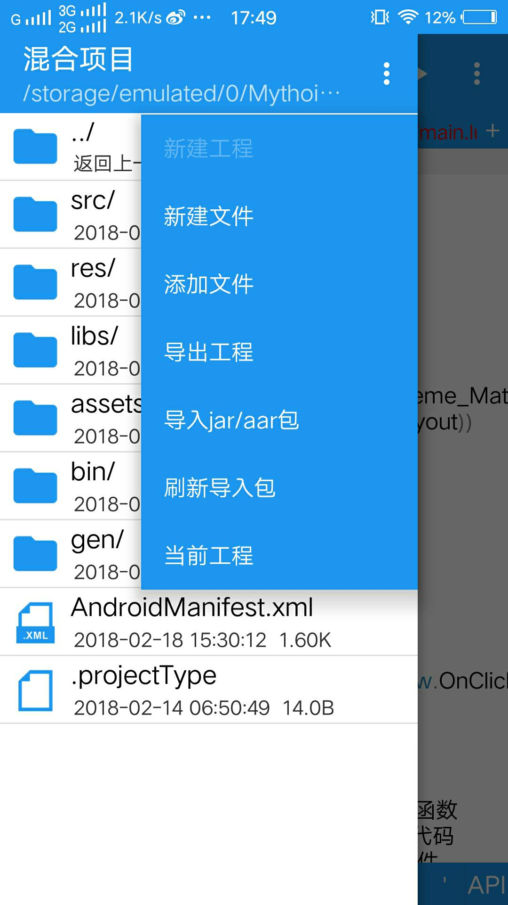
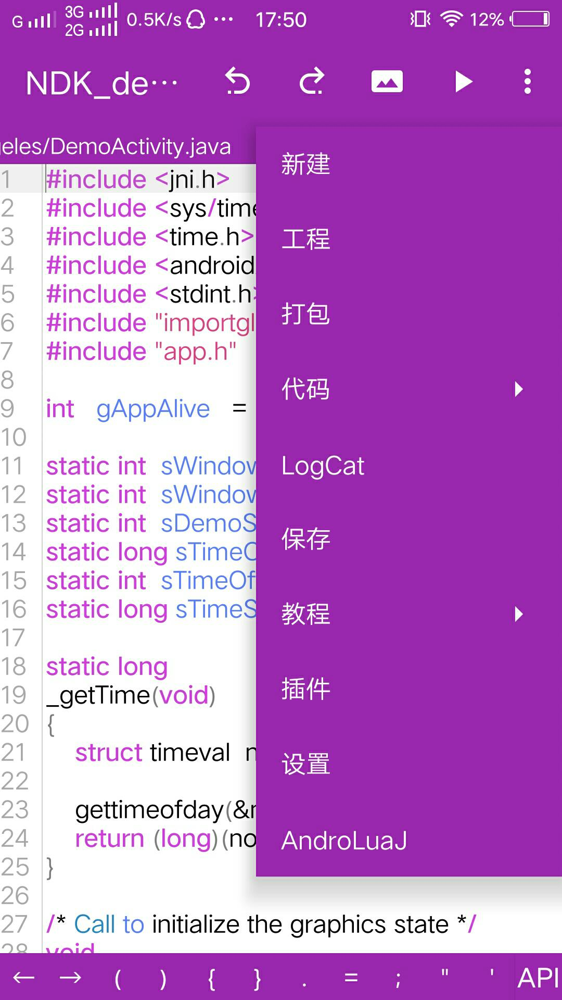
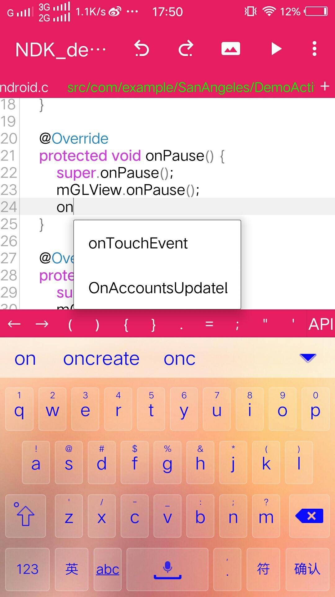
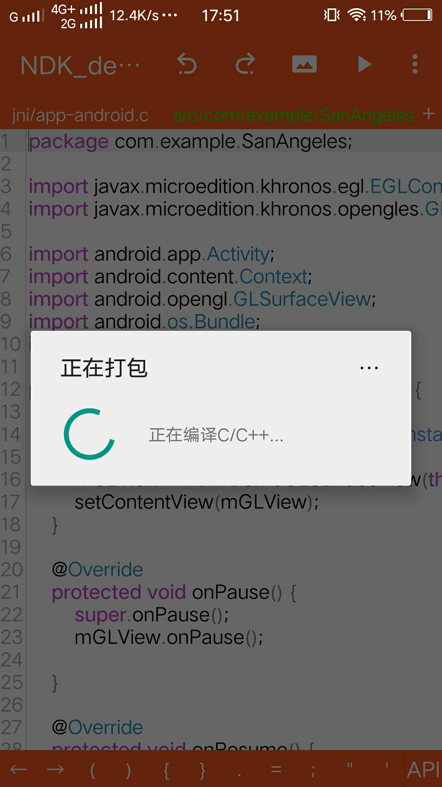
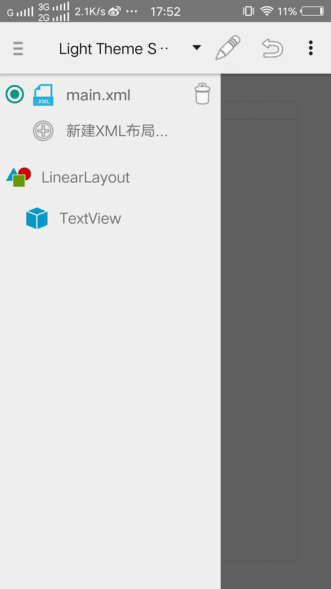
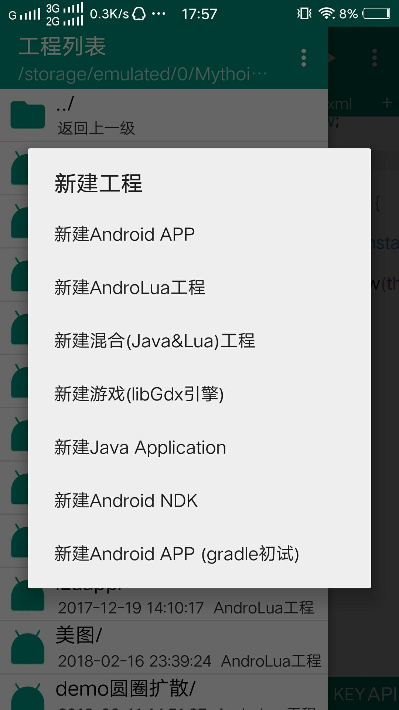

AndroLuaJ-1.2.8
基于androlua+3.6.4 | 18.35M | 简体中文 | 9999+下载
应用简介
该应用是安卓端目前还算完善的IDE，同时支持多种语言编译与运行， 真正实现了多语言快速封装apk。应用集成了java环境、Lua环境和C/C++环境，不管你会哪个都可以快速封装成安卓应用，如果Java和Lua都会那就更好了，java和lua混合开发是该应用的最大特色，有能力者还可以再配合NDK。其他：齐全的开发教程，详尽的开发文档，代码自动补全，代码高亮，可视化布局.....在手机端轻松设计出属于自己的APP，效果堪比PC端的eclipse，完美兼容eclipse的安卓项目。由于搭建本地NDK环境占用太多存储空间，所以C/C++采用云端编译。默认androlua版本3.6.4，ndk版本android-ndk-r13b .
-
This one is even better
极简风格，简约色调，代码高亮，Java、Lua混编，相互调用
 -
Feature number 1
侧滑，工程目录，操作便捷
 -
Feature number 2
多功能菜单，覆盖全面，一切只为编程更方便
 -
Feature number 3
代码自动补全，方法，变量联想，编程更快捷
 -
Feature number 4
支持NDK开发，云端编译C/C艹代码，免去占用手机太多存储空间
 -
Feature number 5
可视化布局，同时支持xml布局和aly布局
 -
Feature number 6
支持多种工程构建，总有一种适合你
 -
详细介绍
感谢nirenr，感谢寒歌，感谢烧风，感谢追梦，感谢AIDE官方
--AndroLuaJ集成JAVA环境、Lua环境和C/C++环境，支持NDK，支持java、lua、C/C++的编译运行，它可以在手机端快速打包apk。
使用富有生命力的Lua语言和原生的java语言进行Android编程。
使用的NDK版本ndk-r13b
--如果你会Lua语言，你可在手机上用极为简洁灵活的Lua语言调用AndroidApi与JavaApi编写出轻量的安卓程序。
-[动态]
Lua属于脚本语言无需编译，直接运行程序。也就意味着给安卓添加了动态性，热更新更便捷
-[灵活·高效]
简练自由的语法，你可自由的探索出最适合自己的写代码手法。
-[扩展]
它支持导入第三方类库，你甚至可以从宿主层面对它进行定制。
--如果你会java语言，你可以在手机上用安卓原生支持的java进行打包安卓原生程序。
-[多版本选择]
支持java1.3，java1.4，java1.5，java1.6，java1.7
-[原生·干净·包小]
因为使用了java，打包生成的apk轻,小,干净。空工程打包仅34KB。
--如果Lua和Java你都会那就更好了，你照样可以同时使用Lua和JAVA打包安卓程序
-[变态的编程方式]
lua文件中允许插入java类，java方法，java接口...
-[多种方式布局]
支持xml布局和nirenr的aly布局
内含libGDX游戏框架，喜欢开发游戏的也可以尝试一下
-特色：
可视化布局、代码自动补全、代码高亮、强大的LogCat过滤、自动导包、齐全的开发教程、详尽的开发文档......
AndroLuaJ手机端编程，想你所想，做你想做
AndroLuaJ官方交流群551480248 -
更新日志
1.0.3修复6.0+闪退，适配到4.0+
1.0.4修复包名重复问题
1.0.5新增多主题选择
1.0.6修复切换主题后文件保存错位问题
1.0.7修复打包错误时AndroidManifest.xml多次生成错误代码 新增导入包的类名高亮和自动补全以及导包 优化构建res时的错误定位 优化dex构建速度 简化了xml资源的引用
1.0.8新增布局视图对.jpg和.9.png的图片支持 修复安卓7.1.1使用java1.7闪退问题 新增工程导出 新增插件功能 优化dex构建速度，完全支持java1.7，支持所有jar包 修复导入包的类自动补全和语法高亮等问题
1.0.9修复bug，添加aly布局助手
1.1.0修复跳转到java输出控制台闪屏问题 修复java application工程无法引用jar包问题 修复代码过长时自动导包卡顿问题 添加jar仓库
1.1.1修复无法引用jar包非类资源，重新定义apk构建规则，修改插件路径
1.1.2新增NDK支持，支持C/C++编译，支持构建多平台so，真正实现Java、C/C++、Lua多语言快速封装apk
1.1.3更新得有点急，抱歉了各位，紧急修复一个bug
1.1.4编辑器新增变量高亮，变量联想，方法联想，美化aly布局助手。文件快速定位...
1.1.5新增静态字段、方法补全，lua中也支持方法补全，免安装运行，编辑器背景、字体自定义颜色，支持打开alp工程。
1.1.6修复文件不能重命名，免安装运行支持引用Java。修复bug(真的)，之前的版本bug实在多，这个应该会好很多。
1.1.7修复bug，并行编译提升构建速度
1.1.8新增gradle支持(初试，未完善)，兼容部分aide项目，新增新建NDK工程 选项，新增aar包支持，修改UI部分细节。
1.1.9修复bug，插入方法或类支持手动导包(避免自动导包出错)
1.2.0修复引用aar时出现的问题，修改Java application工程部分细节(main方法传递Activity对象，调试更方便)，更新aapt版本.....
1.2.1记录文件编辑位置和当前打开的文件(免去切换文件后需要重新滑动)，修复布局视图偶尔加载失败问题，教程的文本可复制
1.2.3 ......
1.2.4 新增Lua加密，新增社区，解决一些小问题
1.2.5新增本地NDK环境，aly布局表新增{include; layout=""}支持引用aly和xml布局，功能类似xml布局的< include layout=""/>标签，修复混合工程中java调用lua函数因路径问题出现的小问题
2018.07.06
1.2.6修复bug，修改部分ui细节，新增自定义签名，新增LuaFileSystem,penlight,lpeg等模块，还有其他.......
2018.07.14
1.2.7多线程构建dex，速度提升12倍，新增dex构建进度、性能优化、提升应用稳定性
2018.07.23
1.2.8修复bug
开发者/安装包相关
应用名称：AndroLuaJ
应用包名：com.mythoi.developerApp
发布时间：2017.10.18
更新时间：2018.07.23
上架市场： 酷安应用市场
开 发 者：mythoi
合作邮箱：oumythoi@gmail.com
反馈邮箱：mythoi_occ@163.com
AndroLuaJ官方交流群551480248
备案/许可证编号：桂ICP备17006390号-1